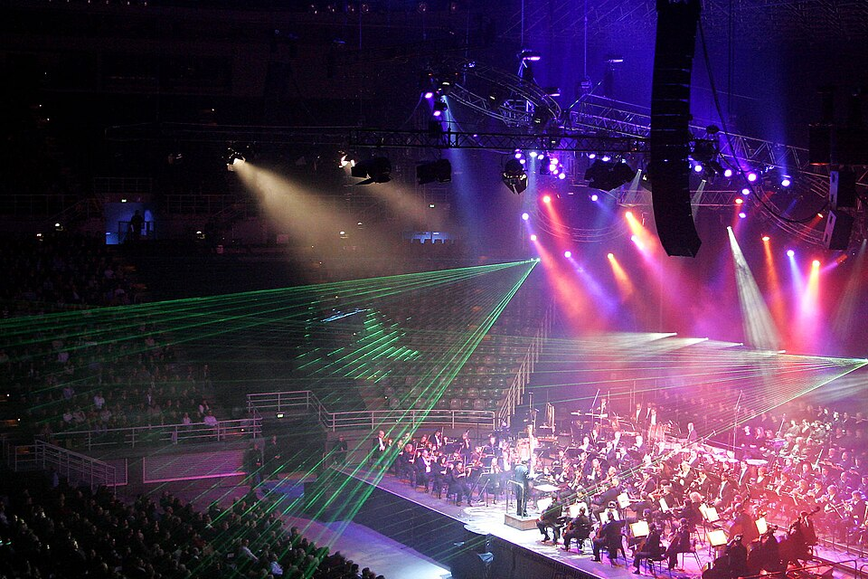

Bandeau LED WS2812B — 50 LEDs — Simulation Temps Réel
Analyse Fréquentielle (Simulée)
🎵 Initialisation audio...
Détails du Projet
Rétro-ingénierie d'un bandeau LED commercial et reprogrammation complète en C sur microcontrôleur. Le système offre 5+ modes d'éclairage synchronisés avec l'analyse audio en temps réel.
Technologies
ATmega328P C / AVR WS2812B FFT Audio PWM SPIUtilité dans la vie réelle
Les bandeaux LED programmables sont omniprésents : concerts et spectacles vivants, éclairage architectural, signalisation automobile, décoration intérieure intelligente. Ce projet démontre la maîtrise de la communication série rapide et du traitement de signal en temps réel sur systèmes contraints.
🎸 ANALOGIE : ÉCLAIRAGE SCÉNIQUE DMX
Concert et Régie Lumière
